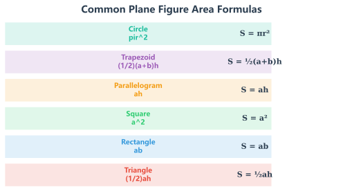
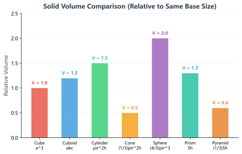
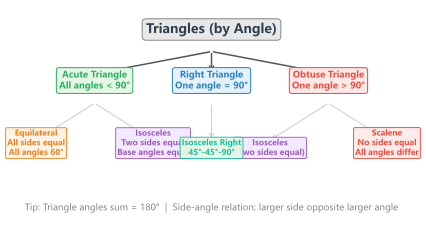
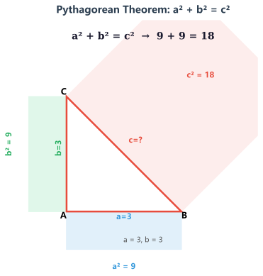
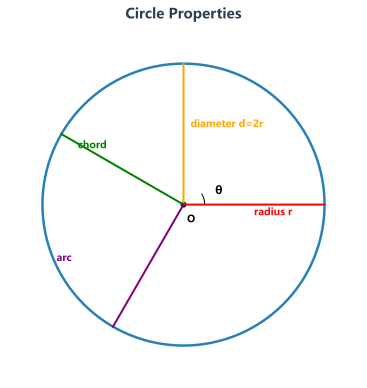

平面图形面积是初中几何的基础板块，也是中考的必考内容。掌握以下公式的同时，要理解每个公式的推导过程和适用条件。

立体几何在初中阶段主要考查表面积和体积的计算，是中考填空题和解答题的高频考点。注意区分"侧面积"和"全面积"。

三角形是初中几何的核心构件——几乎所有几何问题最终都转化为三角形问题来解决。掌握三角形的定理体系，是学好几何的关键。

勾股定理是初中几何最重要的定理之一，也是中考的必考内容。它揭示了直角三角形三边之间的数量关系：a² + b² = c²（c为斜边）。

| 角度 | sin | cos | tan | 记忆口诀 |
|---|---|---|---|---|
| 30° | ½ | √3/2 | √3/3 | 1-2-√3，sin30最小 |
| 45° | √2/2 | √2/2 | 1 | 两个√2/2，tan45=1 |
| 60° | √3/2 | ½ | √3 | 与30°正好相反 |
圆的相关定理是中考几何的综合应用部分，常与三角形、四边形结合考查。掌握圆的性质是解决综合性问题的前提。

四边形是中考几何的综合载体，特别是平行四边形、矩形、菱形、正方形之间的性质与判定，是解答题的高频命题方向。
| 图形 | 额外性质 | 对角线特点 | 面积补充 |
|---|---|---|---|
| 矩形 | 四个角=90° | 对角线相等 | S = ab |
| 菱形 | 四条边相等 | 对角线互相垂直 | S = ½d₁d₂ |
| 正方形 | 兼具矩形和菱形性质 | 相等且垂直 | S = a² = ½d² |
全等和相似是初中几何证明题的两种核心方法。全等意味着"形状和大小都相同"（对应边相等），相似意味着"形状相同但大小不同"（对应边成比例）。
掌握经典的几何解题模型，可以快速识别题型并找到突破口。以下是中考几何最常用的五大模型：
| 模型名称 | 特征 | 核心方法 | 常见题型 |
|---|---|---|---|
| 一线三等角 | 一条直线上三个相等的角 | 构造三角形相似 | 求线段长、比例 |
| 手拉手模型 | 两个等边/等腰三角形共顶点 | 旋转全等/SAS | 证明线段相等 |
| 中点辅助线 | 题目中有中点条件 | 倍长中线/中位线 | 证明线段关系 |
| 角平分线模型 | 题目中有角平分线 | 向两边作垂线/截取相等 | 求距离、比例 |
| 双垂直模型 | 直角三角形中作高 | 射影定理/相似 | 求线段长度 |